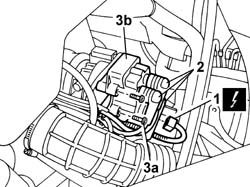

5510C10 IGNITION COIL/S - R+R
- Path
- Procedures > 55 ELECTRICAL EQUIPMENT > 5510 ENGINE IGNITION > 5510C COIL, ECU, SENSORS > 5510C10 IGNITION COIL/S - R+R
- Kind
- repair procedure (removal / refitting; the operation number is the code)
- Applies to
- engines: 2.0 16V; all production periods
- Interactive page
- https://sloeber94.github.io/elrnDB-fDct/en/#/244001345
Applies to: engines: 2.0 16V; all production periods
 Removing
Removing
 Refitting
Refitting- Disconnect the negative battery terminal.
1. Disconnect the electrical supply connection on the ignition coil.
2. Disconnect the spark plug high tension leads.
3. Undo bolts (3a) and remove the coil (3b).

Applies to: engines: 2.0 16V; all production periods
Refitting
Removing- Position the ignition coil in its seat.
- Tighten the retaining bolts.
- Connect the electrical connection.
- Fit the spark plug high tension lead caps.
- Connect the negative battery terminal.